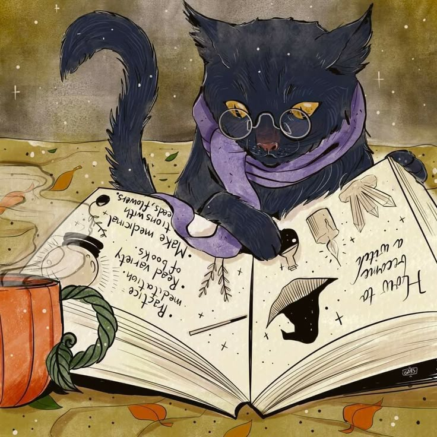

my study choice
As part of my study choice activities, I visited the HZ open day. I explored several programs, including Chemistry, Civil Engineering, and IT. Out of these, I liked IT the most, so I asked my high school if I could attend a “study for a day” program. During that day, I felt that I could really see myself studying in this field. Afterward, I compared IT programs at different universities, but I liked the program at HZ the most, so I decided to go to it. Then i found out that i techincally could go to KIST wich is basically Korean MIT. so hz droped and became pland b.
I chose IT because I took an IT course in high school and really enjoyed it. That was my first real
introduction to programming and problem-solving with computers, and I quickly realized that it suited me.
Another reason IT feels like the right path is that it's the only STEM field I know where I don't have to
study physics or chemistry—two subjects I've grown to dislike over time.
I'm also autistic, and I think IT is one of the few fields where that can actually be an advantage. I like
that the work is structured, logical, and allows for deep focus. It's a space where I can solve problems in
my own way, which makes me feel confident that I can grow both technically and professionally without
constantly struggling against the difficulties I sometimes face in other environments.
Afther the IT program I would like to become a software engineer or an ethical hacker. As a software engineer i woud like to make softwar to accomadate livng as a neurodivergent person. because I`m autistic, most of my friends are neurodivergent and the struggle is real. The ethical hacker is just cause it seems cool and I always like to have a back up option.